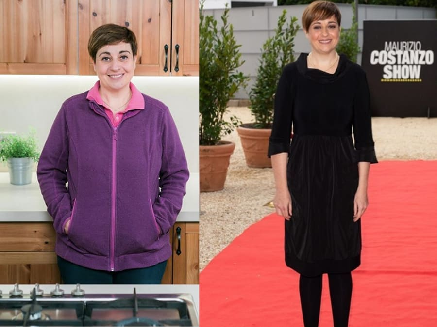

Come perdere 17 kg? È semplice!
I segreti di Benedetta Rossi per dimagrire
Sono dimagrita da sola e aiuterò anche voi
Ciao! Mi dispiace di non essere stata tanto presente ultimamente, ma non ho avuto il tempo di rispondere a tutte le vostre domande. Però ho notato che ruotano tutte intorno allo stesso problema, come dimagrire una volta per tutte. E, ovviamente, senza danni alla salute! Allora ho deciso di riunirle tutte in questo post e raccontarvi come ho perso quegli odiati 17 kg.
Queste foto sono state scattate ad esattamente un mese di distanza. Impressionante, vero?
Non sono mai stata magra, ma ultimamente il mio corpo è andato fuori controllo ed è
diventato un
disastro: doppio mento che arrivava fino al seno, fianchi enormi e cellulite ovunque, sulla
pancia,
sulle gambe e persino sulle braccia. Appena ci ho fatto caso, ho ridotto in brandelli tutte
le mie
canottiere e maglie senza maniche.
Ho pianto come una fontana prima di riprendermi. E mi sono ripresa, certo, ma ero
ancora grassa!
Ho cominciato a provare di tutto allo stesso tempo, probabilmente come altre ragazze stupide
quanto me.
Mi sono messa a dieta e ho cominciato a fare sport. Mi alzavo all'alba, mangiavo uova crude
(non
fatelo!) e mi trascinavo fuori, tirandomi dietro le mie gambe grasse. Ho rinunciato ai
fritti, mi sono
iscritta in palestra, ho comprato tisane dimagranti e riempito il frigo di yogurt. Un
trattamento
completo, per così dire. Pensate che sia servito a qualcosa?
Proprio il contrario! Ho messo su altri 5 kg, non so come, durante le settimane di quei maledetti allenamenti. Pesavo 87 kg! Per un'altezza poco superiore ai 160 cm! Più avanti, i medici mi hanno spiegato che il mio corpo aveva affrontato una situazione di stress , per cui ha iniziato ad accumulare "riserve" in modo intensivo. Il mio corpo pensava che volessi distruggerlo, e l'avrei fatto volentieri! Mi sono dimenticata il sapore del pane, della carne e del gelato. Mangiavo solo mele e bevevo solo acqua, ma inutilmente.
Oltre ad una questione di aspetto fisico, i chili di troppo sono diventati la causa principale del deterioramento della mia salute, manifestandosi quindi con problemi articolari e pressione alta, che mi tormentavano costantemente con mal di testa. Dopo aver consultato un medico ed eseguito diverse analisi, è stato riscontrato che avevo un livello di zucchero molto elevato (9-10 mol). Ho capito quindi che dovevo prendermi cura di me stessa e lavorare per ripristinare la mia salute, ma per questo dovevo dimagrire!
Per farla breve, ho provato diversi metodi dimagranti per qualche mese, ma poi mi sono arresa e ho interrotto questa follia.
Mi vergogno a parlarne, ma un giorno mi sono rassegnata al pensiero di diventare una zitella grassa e di morire circondata da 7 gatti. Allora sono andata da McDonald, ho ordinato metà menù e ho ingurgitato tutto in mezz'ora. Poi ho vomitato in bagno e ho pianto. La situazione non poteva andare peggio.
Poi, il miracolo. No, non nel bagno del McDonald, ma qualche settimana dopo. Su YouTube, ho
visto i
video di una ragazza americana che raccontava di come era riuscita a liberarsi della
maledizione di
famiglia, il culone, con l'aiuto di KETO DIET.
L'ho ordinato quando ero solo a metà video. Poi ho cercato delle informazioni su
Google e ho
scoperto che tutte le stelle di Hollywood lo usano per dimagrire. Dato che avevo provato di
tutto e non
avevo ottenuto risultati, non credevo nelle trasformazioni miracolose e dubitavo che
KETO DIET
avrebbe potuto aiutarmi.
Beh, non avrei dovuto!
Il pacco è arrivato in meno di una settimana. Mentre aspettavo, ho letto tonnellate di recensioni e di informazioni su KETO DIET per essere certa di aver fatto la scelta giusta. Ho seguito le istruzioni, assumendo il prodotto due volte al giorno, alla mattina e alla sera.
Ora prestate molta attenzione. Vi conviene sedervi.
In 4 settimane, ho perso 13 kg!
Milioni di donne in Europa e negli Stati Uniti si liberano del peso in eccesso con KETO DIET. Secondo le ricerche, il 96,7% di loro ha ottenuto risultati impressionanti: 9 – 14 KG IN SOLI 4 SETTIMANE!
È la combinazione unica degli ingredienti a rendere semplice ed efficace il processo di dimagrimento, e i risultati sono incredibili!
Ho perso
10 cm sui fianchi e la pancia è semplicemente scomparsa, non riuscivo a crederci. La pelle e
i capelli
sono diventati molto più luminosi e i brufoli sulla schiena sono scomparsi da subito.
Ho cominciato a credere di poter davvero diventare una bella principessa, dopotutto
le bilance e
gli specchi non mentono!
E comunque non ho seguito diete in quel periodo, sono dimagrita soltanto grazie a
KETO DIET.
Anche la quinta settimana ha dato i suoi frutti: -4 kg.
E la cosa più sorprendente è stata non dover fare niente. Mi sono limitata a prendere
KETO DIET come indicato nelle istruzioni e stando attenta a non dimenticarmene. Persino le
persone più
pigre possono riuscirci.
In un mese e mezzo, avevo perso circa 17 kg senza sforzi, privazioni e allenamenti. La pancia e le braccia, che erano piene di cellulite, sono dimagrite e il doppio mento è scomparso per sempre. Mi viene quasi da piangere per la contentezza mentre scrivo queste cose :)
Dopo aver completato il trattamento completo di 2 mesi, avevo perso complessivamente 17 kg. Nessuno si immagina i miracoli di cui è capace il corpo quando viene aiutato. Non ho più 20 anni, a quell'età si ingrassa e si dimagrisce facilmente.
Come dicevo, in circa un mese e mezzo ho risolto il problema dell'eccesso di peso, e letteralmente in poche settimane la mia salute era già migliorata. Avevo quindi superato il problema principale: l'eccesso di peso! Le mie articolazioni non dovevano più subire un carico eccessivo, la pressione sanguigna è diventata stabile e il mal di testa è scomparso; pure il livello di zucchero era tornato alla normalità - (fino a 5 mol)
Migliaia di persone ancora non credono che ora sono diventata così:

Ah, nel 2021 KETO DIET è stato testato dall'Accademia Nazionale delle Scienze. I risultati sarebbero stati sconvolgenti, ma non sono mai stati divulgati.
Perché? Perché per le compagnie farmaceutiche, per i medici, i dietologi e le cliniche private, un prodotto che FUNZIONA DAVVERO non è conveniente! Il prodotto, tra le altre cose, è anche a buon mercato...
Ora consiglio
KETO DIET a tutte le mie amiche e colleghe, credo che tutti dovrebbero conoscerlo. È così
bello essere
magra e piena di energia che voglio che tutti sappiano quanto si può essere felici.
Non morite di fame, non ammazzatevi in palestra, siate più furbe! Ora sapete cosa
fare.
Sognate ancora di avere un corpo snello? È arrivato il momento di agire! Sbarazzatevi subito del grasso in eccesso!
Ora risponderò ad alcune delle domande più comuni:

Avrò le smagliature dopo un dimagrimento così rapido?
No, KETO DIET non lascia smagliature! Il dimagrimento, per quanto significativo, è graduale, in
modo che la
pelle abbia il tempo di adattarsi e di rimanere tonica.
Cosa succede alla pelle? Si restringe?
No! Torna al suo stato normale.
KETO DIET attiva la produzione di collagene, che consente alla pelle di restare elastica e
tesa. Non
rimarrà nessuna smagliatura, ruga o cellulite!
Che dieta dovrei seguire?
Non credo che una qualche dieta ti possa aiutare. Forzerà solo il tuo corpo a immagazzinare grasso e provocherà quindi un aumento di peso. Ti renderà irritabile e il tuo stato emotivo generale peggiorerà a vista.
Queste gocce sono sicure ? Ci sono controindicazioni?
Il farmaco è completamente naturale, senza additivi chimici, quindi non ci sono controindicazioni, rispetto a diete inefficaci e carichi pesanti nelle palestre, che non fanno altro che danneggiare il tuo corpo.
È vero che non bisogna mangiare dopo le 6 di sera?
No, è solo un mito. Mangiate quando volete, non ascoltate queste dicerie. Basta
consumare delle
piccole porzioni ogni paio d'ore e andrà tutto bene.
Quanto costa KETO DIET ?
Non voglio sostenere che il farmaco sia molto economico! Ma rispetto a quanti soldi ho speso per tisane, abbonamenti in palestra e allenamento personale con un istruttore, facendo decine di analisi dopo essermi sentita male e curando il diabete, l'ipertensione e i dolori articolari, il costo di KETO DIET è semplicemente ridicolo!
Sono lieta di darvi una buona notizia! Ho contattato i rappresentanti italiani di KETO DIET e hanno deciso di fare uno sconto del 50% ai primi 99 visitatori del mio blog che decidono di ordinare il prodotto!
Questa offerta è valida fino a (e compreso):
Ultimi commenti:
Mi piace . Rispondi . 2
Mi piace . Rispondi . 12
Mi piace . Rispondi . 16
Mi piace . Rispondi . 11
Mi piace . Rispondi . 21
Mi piace . Rispondi . 9
Mi piace . Rispondi . 9
Mi piace . Rispondi . 32
wow...
Mi piace . Rispondi . 17
Mi piace . Rispondi . 2
Mi piace . Rispondi . 32
Mi piace . Rispondi . 42
Mi piace . Rispondi . 1
Mi piace . Rispondi . 19
Mi piace . Rispondi . 5
Mi piace . Rispondi . 27
Mi piace . Rispondi . 8
Mi piace . Rispondi . 8
Mi piace . Rispondi . 8